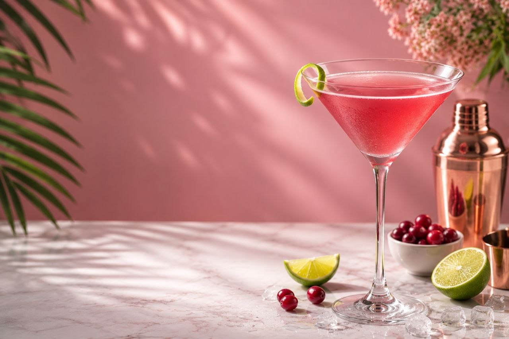

A vibrant pink cocktail with perfect balance of citrus and cranberry flavors.
180 kcal
Easy
5 mins
0 mins
Add ice cubes to a cocktail shaker.
Pour in the vodka, orange liqueur, cranberry juice, and fresh lime juice.
Shake vigorously for about 15–20 seconds until the drink is well chilled.
Strain the mixture into a chilled cocktail glass.
Garnish with an orange peel twist or a fresh lime slice.
Serve immediately and enjoy your refreshing Cosmopolitan.


Try delicious recipes only on Flavora.